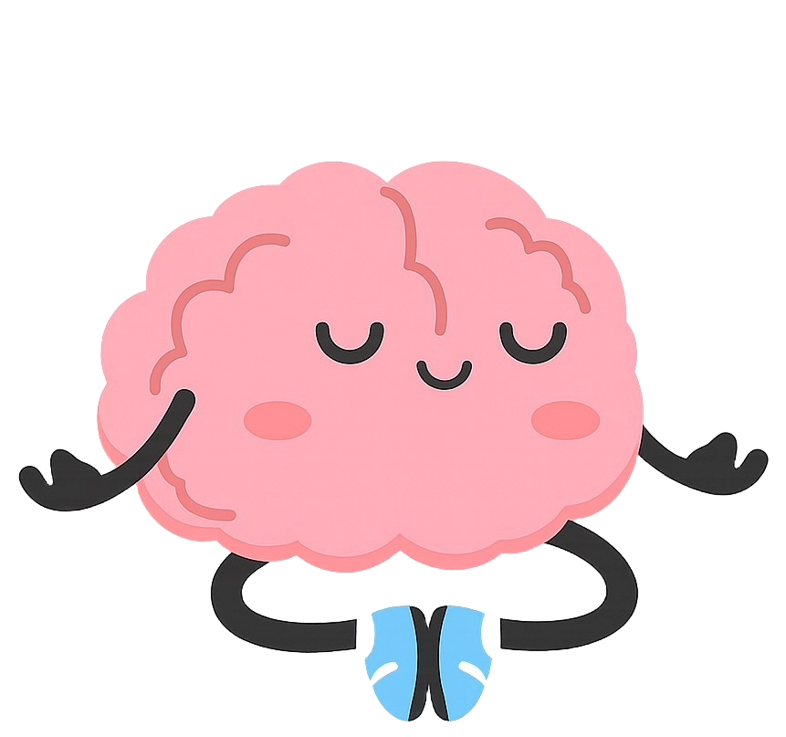

Tu bienestar emocional
0%
Todavía no hay registros. Elegí cómo te sentís hoy para empezar.
Consejo para hoy
Seleccioná tu estado de ánimo.
Un espacio para registrar cómo te sentís, calmar los nervios antes de un examen y construir pequeños hábitos que te ayudarán a sostener tu rutina.

Todavía no hay registros. Elegí cómo te sentís hoy para empezar.
Seleccioná tu estado de ánimo.
Agregá los hábitos que quieras sostener, organizados por ámbito.
Progreso: 0/0 hábitos
No hace falta hacer todo perfecto. Elegí una acción simple y empezá por ahí.
Volver arriba